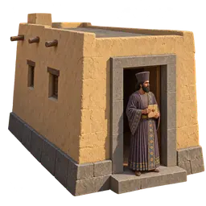
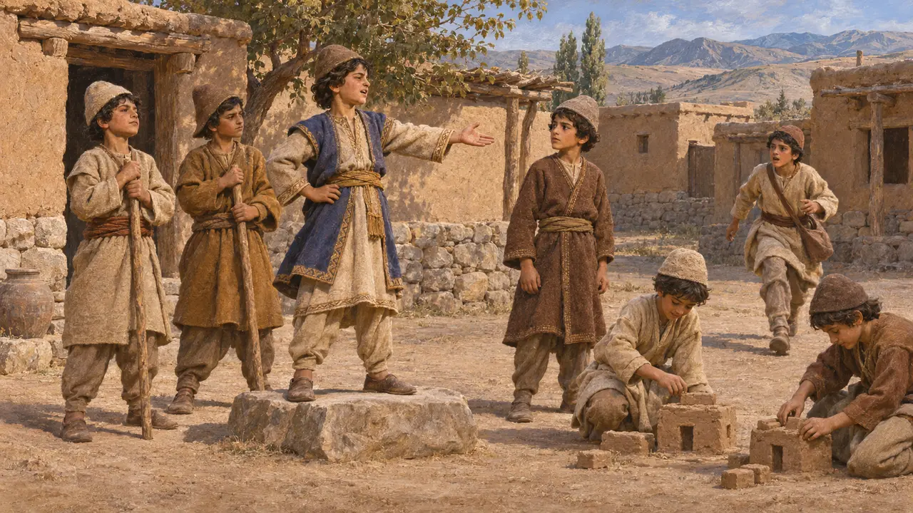
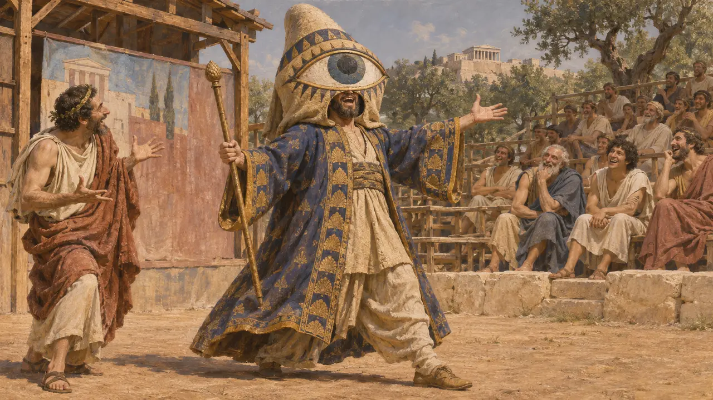
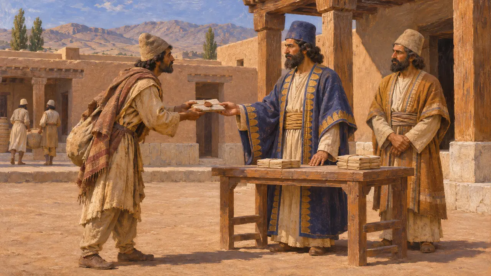

House of the King's Eye
The King's Eye, a royal watcher known from Greek writers, 6th-5th century BCE
Greek writers say the Persian king had an officer called the King's Eye, who watched and reported for him. The figure shows how Greeks imagined royal power reaching across a vast empire. No Persian document of the period uses the title, so historians still debate whether it was a single post or a Greek way of describing the king's many informants.
In the game: In the game the House of the King's Eye halves thefts and riots while staffed. No such building is known, and the sources place the Eye's watch over officials and subjects for the King, not over street crime, so this is a dramatization.

The boy who played king
Ancient accountHerodotus tells how the young Cyrus, raised as a herdsman's son, was chosen king by the village boys in a game. He gave them roles: builders of houses, bodyguards, a bearer of messages, and one boy he named the King's Eye. Herodotus presents this as a sign of royal nature, so the tale tells us what he thought a Persian court contained rather than proving the office existed under Cyrus.
Herodotus 1.114
Eyes and ears in Greek writers
Ancient accountAeschylus, writing in 472, has the Persian chorus ask Xerxes about a trusted companion called his Eye, which suggests Athenians already knew the phrase. Herodotus says the Median king Deioces kept watchers and listeners across his land. Xenophon later explains the saying that the king had many eyes and ears: he rewarded anyone who brought useful reports, so subjects feared to speak against him anywhere.
Aeschylus, Persians; Herodotus 1.100; Xenophon, Cyropaedia 8.2.10-12

A comic envoy in Athens
Ancient accountAristophanes, in a comedy staged in 425, brought on a Persian envoy called Pseudartabas, the King's Eye, wearing a costume with one huge eye. The joke only works if the Athenian audience recognised the title. It shows the idea was familiar in Greece, though comedy is poor evidence for how the office actually worked.
Aristophanes, Acharnians

Office or figure of speech
DisputedNo royal inscription or Persepolis tablet uses the title King's Eye. An Aramaic petition from Elephantine names local officers called gaushaka, listeners, whom some link to the king's ears. Some historians accept a real inspector who reported on satraps. Others, such as Steven Hirsch, think the Greeks turned general royal watchfulness into one post. The Persian record does show officials, sealed travel documents and couriers that kept the court informed.
S. W. Hirsch, The Friendship of the Barbarians, 1985; P. Briant, From Cyrus to Alexander, 2002
Sources
- Herodotus 1.114; 1.100
- Xenophon, Cyropaedia 8.2.10-12
- Aeschylus, Persians
- Aristophanes, Acharnians
- S. W. Hirsch, The Friendship of the Barbarians, 1985
- P. Briant, From Cyrus to Alexander, 2002